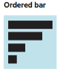
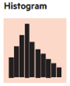
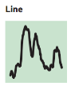
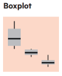
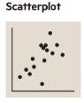
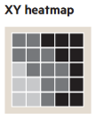
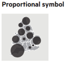
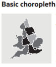

Describe
Analytics approaches usually encompasses 4 distinct steps:
- Describe;
- Discover;
- Predict;
- Advise.
The first step is extremely important as it provides a first overview of the data and allow to build the foundation for the next ones.
The data science maturity model from Booz Allen

The first phase (DESCRIBE) of analytics consists in a thourough review of all variables within the dataset.
This exploratory phase usually overlaps with data cleaning; it is the stage where anomalies become evident e.g. individually plausible values may lead to a way-out point when combined with other variables on a scatterplot. In an ideal situation, this step would end with confidence that one has a clean dataset, so that a single version of the main datafiles can be finalised and ‘locked’ and all published analyses derived from a single consistent form of ‘the data’. In practice later stages of analysis often produce additional queries about data values.
Tabulation: One-way table & Crosstabulation
Often, much of the basic information need are supplied through a tabulation of results, question by question, as ‘one-way tables’. Sometimes this can be done using an original questionnaire and writing on it the frequency or number of people who ‘ticked each box’. Of course this does not identify which respondents produced particular combinations of responses, but this is often a first step where a quick and/or simple summary is required.
At the most basic level, cross-tabulations break down the sample into two-way tables showing the response categories of one question as row headings, those of another question as column headings. If for example each question has five possible answers the table breaks the total sample down into 25 subgroups.
When dealing with select_multiple, there are different ways of computerising these data. The “multiple dichotomy”approach provides as many columns as there are alternatives. The “multiple response” way find the maximum number of ticks from anyone and then have this number of columns, entering the codes for ticked responses, one per column.
Graphical review
The use of graphical methods is important for presentational purposes, where simple messages need to be given in easily understood, and attention-grabbing form.Their true power comes from the ability of the eye to discern patterns in a graph that are not clearly evident from lists of numbers or tabulated statistics. In Tufte’s pithy phrase,“graphics reveal data”. With data in hand, the most productive first step is often to explore the data graphically. These graphs do not have to be especially polished and beautiful; rather, they need to be easy to produce and thoroughly informative, a visual scratch pad where we use the power of graphics to get a sense of the shape of variables and the interactions among them.
Type of variables.
When designing the form, each variable is associated with a data type
| Variable type | Subtype | Xlsform type | Examples |
|---|---|---|---|
| Categoric | Nominal | select_one, select_multiple | occupation |
| Categoric | Ordinal | select_one | education |
| Categoric | String | text | name, description |
| Numeric | Continuous | integer, numeric, calculate | age, height |
| Numeric | Discrete | integer, select_one, calculate | cars, floors |
| Numeric | Date/Time | date, time, dateTime, calculate | DoB, Arrival Date |
| Geographic | Point | geopoint, select_one | Cities |
| Geographic | Line | geotrace, select_one | Road |
| Geographic | Polygone | geoshape, select_one | Gov., District |
The recommended graphical view is linked to the subtype of variables that should be presented.
Barchart
 Barchart shows simple frequency distribution of categoric value.
Bar chart can also be used to visualise crosstabulation (i.e. the frequency relation between two categoric variables), bar chart can be be: * faceted * stacked * paired
Histogramm
 Histogram shows simple frequency distribution of a unique numeric variable.
The classification of data into bins serves to filter out some of the noise. The key choice that has to be made when designing an histogram is that of the number of classes (“bins”) into which to group the data or, alternatively, the width of each class, and this choice is as much a matter of art as of science. The Freedman and Diaconis rule or the Wand “zero-stage rule” can be used to determine bin width.
Note that histogramm can also be conveninent used to display date variables. The same discreatisation approach can be used.
Line Chart
 Line chart are used to display smoothen frequency distribution of a unique numeric variable.
A histogram provides a discretized, nonparametric approximation to the underlying density, but it has three drawbacks: it is not smooth, it depends on the bin widths, and it is sensitive to the choice of end points of the bins. in order to address those points, it’s possible to use Kernel density visualisation in order to see a smoothed version of the data.
Boxplot
 Boxplot are used to visualise the crosstabulation of one categoric variable together with one numeric variable.
At the heart of the boxplot is a box that shows the 25th percentile (the “lower hinge”) and 75th percentile (the “upper hinge”), as well as the median value of the observations. On the upper side of the box one adds a line that stretches to the “upper adjacent value” and ends in a whisker; the whisker extends up to the largest data point that lies within 1.5 interquartile ranges of the 75th percentile. A similar line stretches to the lower adjacent value. All values of the variable beyond the adjacent values (the “outside values”) are plotted. The result is a snapshot of the distribution of a variable that allows one to get a sense of its symmetry, and the role of outliers. Boxplots are exploratory devices, and one must resist the temptation to try to use them for statistical inference.
Scatterplot
 Scatterplot are used to visualise the crosstabulation of two numeric variable.
The shape of the resulting cloud of points will allow to detect quickly potential correlation. A regression line can be automatically drawn on the scatterplot to help visualising correlations.
Scatterplots can also help detecting specific patterns that would not be detectable if just using means, variance & correlation (c.f. Anscombe’squartet).
Correlation plot
 Correlation plot are used to display the level of correlation between different modalities of 2 categoric variables.
They are often used in conjonction with statistical test (such as chi-squarred cf below)
Maps
It is often useful to display statistical information on maps and indeed a statistical map is just subtype of chart for geographic variable.
 Proportion symbol map are used for absolute values (i.e. to be used to visualise crosstabulation between a geographic variable and a numeric variable)
 Choropleth map are used to display proportion of ration (i.e. to be used to visualise crosstabulation between a geographic variable and the frequency of a categoric variable).
Flow maps are used to present the relation between two geographic variables.
WordCloud
Word cloud can be used to visualise the result of a text variable. They trim non essential word and allows to get a sense the frequency of redudant word within that variable.
Statistical Test
Two random variables are called independent if the probability distribution of one variable is not affected by the presence of another. This is tested through the Chi-squared Test of Independence that allows to know if the independance hypothesis has a higher value than the .05 significance level.
The Chi-squared Test provide a p-value: if the p-value is greater than the .05, then the two tested variable are independent
Check for Errors
Sampling error: The error that occurs when a sample of the population rather than the entire population is surveyed.
Coverage error: The error that occurs when the sampling frame – i.e., the list from which the sample is taken – does not correspond to the population of interest. For instance, it might undercount migrants.
Unit nonresponse error: The error when a designated respondent does not participate in the survey. A serious source of bias in the Literary Digest case.
Item nonresponse error: The error when a respondent does not answer all of the questions, or answers “don’t know”.
Measurement error from Respondent: Occurs when the respondent does not accurately answer the question.
Measurement error from Interviewer: Occurs when interviewers do not pose the questions properly (or falsify the answers).
Postsurvey error: The error that occurs in processing and analyzing survey data.